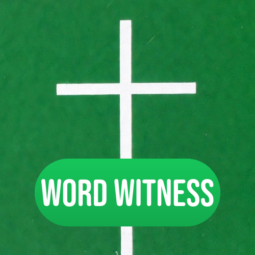

Project Case Study
Word Witness
An interactive reading platform for children that uses Bible-based storytelling to reinforce literacy skills through engaging, age-appropriate learning experiences.
Overview
What This Project Delivers
Word Witness was developed to make early reading practice feel meaningful rather than repetitive. By using story-driven interaction, the project supports foundational literacy while keeping children emotionally engaged in the learning process.
The experience is structured for both classroom and family settings, with navigation and pacing that younger users can follow comfortably. It balances educational intent with design choices that remain simple, warm, and approachable.
Highlights
Key Features
- Story-centered learning model helps children connect reading practice to narrative context and meaning.
- Interface patterns are intentionally simplified for younger users and mixed-skill reading levels.
- Content flow supports repetition and reinforcement without feeling mechanically repetitive.
- Cross-device usability enables use at home, in church programs, or in educational environments.
- Cloud deployment supports stable access and future curriculum expansion as content grows.
Build
Stack And Tools
Screenshots
Professional Screenshot Review

Classroom-friendly media previews showing reading interaction, pacing, and child-focused interface design.